- Módulo: Administración de Sistemas Operativos
- Título del trabajo Clientes ligeros
- Componentes del grupo: Iván José Hernández Regalado
- Curso Académico: 2014/2015
- Fecha de entrega: 26 de Septiembre de 2014
La definición de cliente ligero engloba tanto un software como un equipo real que utiliza los recursos de otro equipo para hacer la mayor parte de su tarea. Un cliente ligero tiene que formar parte de una red y ejecutar el software de cliente, mientras que el servidor de la red hace el trabajo real ya que el cliente ligero no es capaz de realizar muchas funciones por sí solo. Un equipo de cliente ligero puede ser una máquina diseñada sólo para uso en línea, enviar y recibir correo electrónico y navegar por la red y también puede ser parte de una red más amplia, de una empresa o una escuela.
Primero creamos una MV con un adaptador modo puente y otro en modo red interna para que nuestra MV tenga conexión a internet y conexión entre nuestra red interna donde se conectarán los clientes.
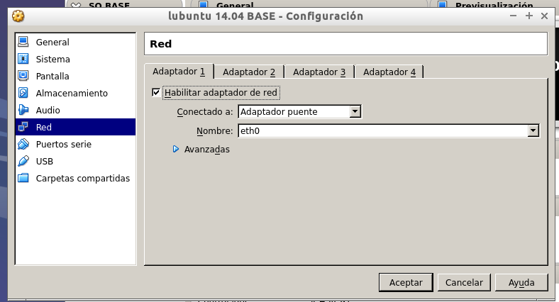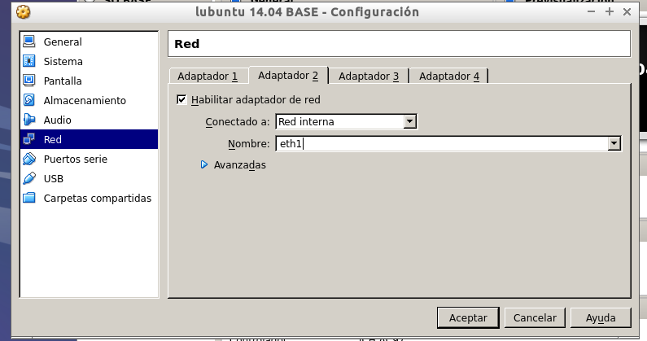
Luego comenzamos la instalación del sistema operativo.
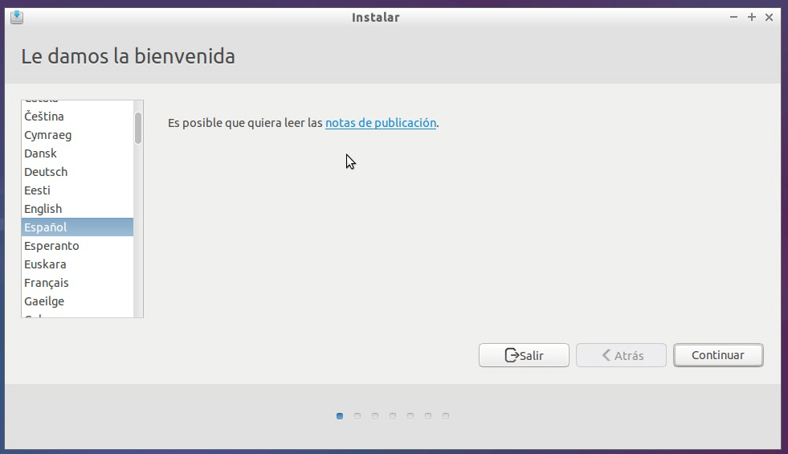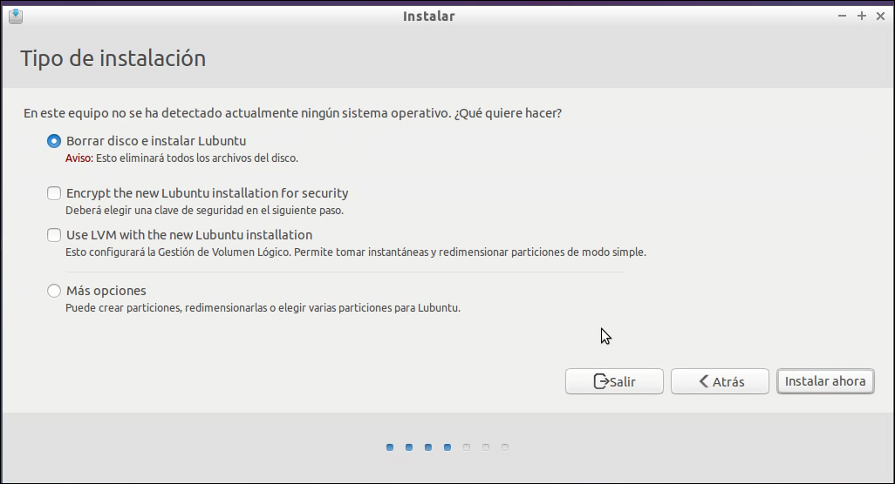 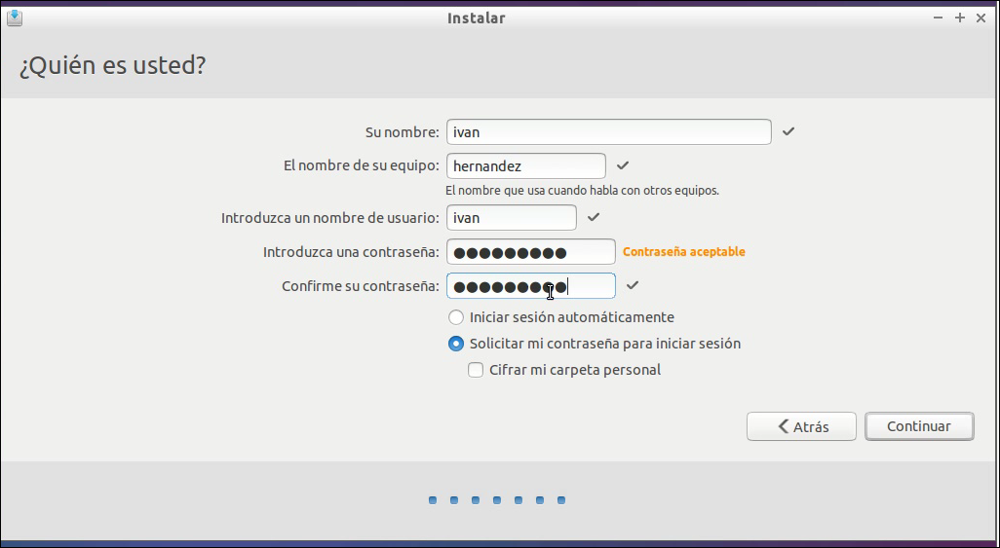
Ahora configuramos las terjetas de red de manera estática.
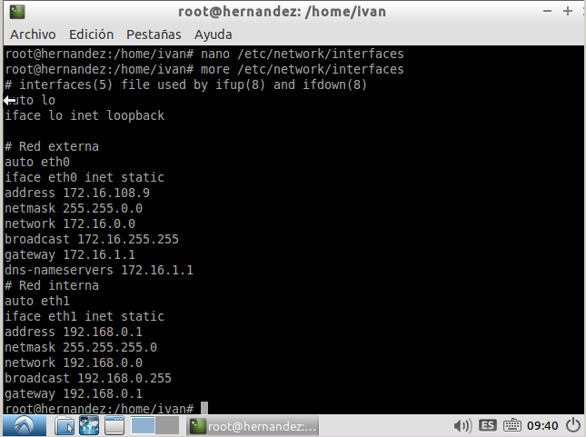
Después debemos ir a los archivos "/etc/hosts" y "/etc/hostname" y modificarlos de modo que nuestro primer apellido sea el nombre del servidor y el segundo apellido el del dominio.
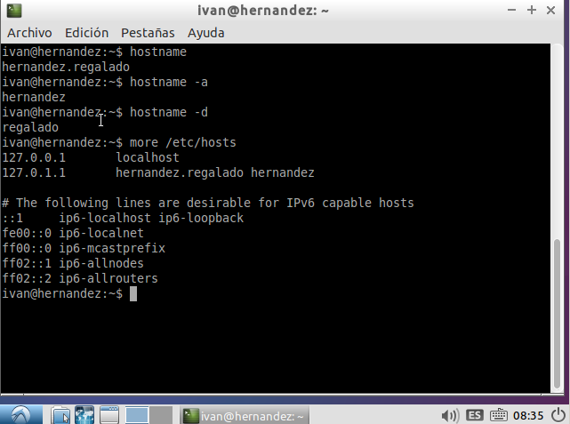
También debemos ir a "/etc/resolv.conf" para añadir la ip de router que nos hace de servidor DNS.
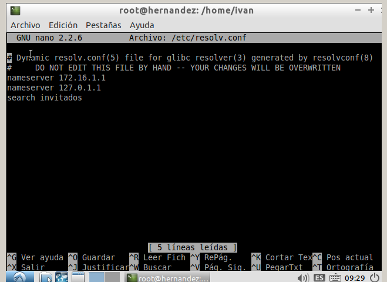
Para finalizar la preparación del servidor solo debemos crear los usuarios para que los clientes se conecten a traves de ellos con el comando "adduser".
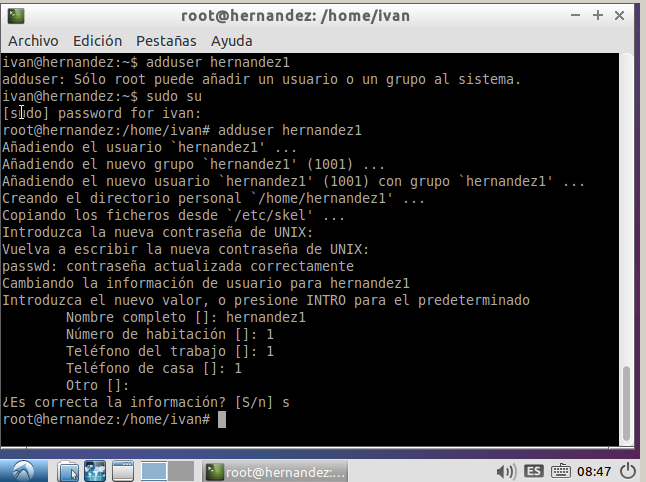
Creamos una MV y modificamos la pestaña de sistema del VirtualBox para que arranque desde red. Además ponemos el adaptador en modo puente.
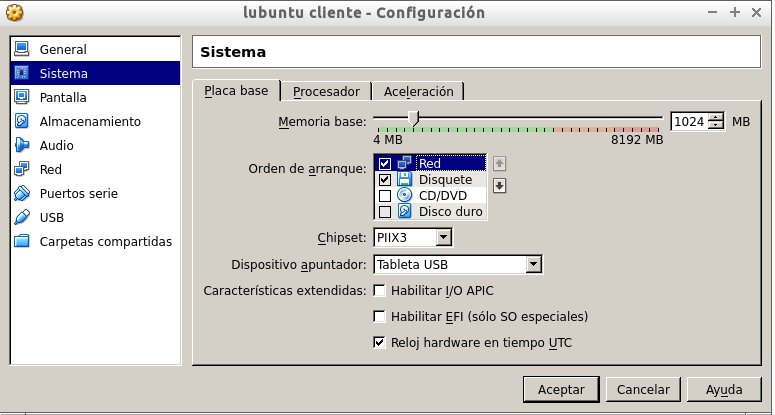 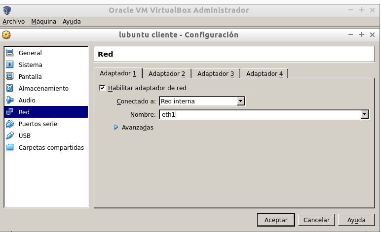
Primero instalamos el servicio con el comando "apt-get install ltsp-server-standalone", una vez instalado tenemos que hacer el comando "ltsp-build-client" para que nos cree las carpetas necesarias y nos funcionen los clientes ligeros. Para finalizar comprobar que tenemos actualizado el SSH haciendo "apt-get install openssh-server".
Revisar la configuración de la tarjeta de red interna y que sea compatible con la que sale en "/etc/ltsp/dhcpd.conf".
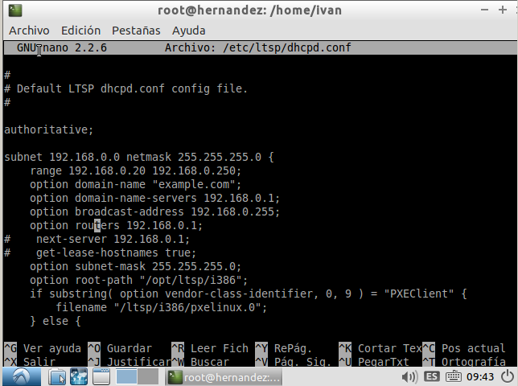
Con el servidor encendido, iniciamos la MV cliente y esperamos a que se carge la pantalla de inicio de sesión. Luego elegimos el gestor de inicio Openbox que es bastante ligero y rapido de iniciar y entramos con un usuario creado anteriormente en el servidor.
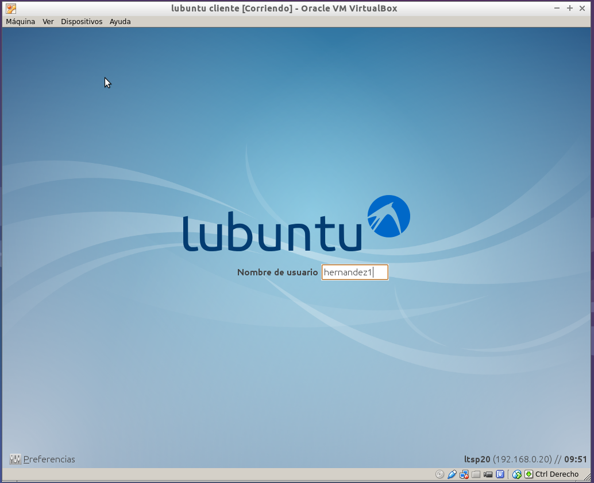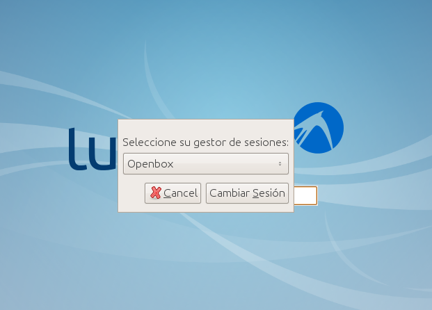
Ahora vamos al servidor para hacer el comando "sudo arp" y comprobar que efectivamente esta conectado el cliente.
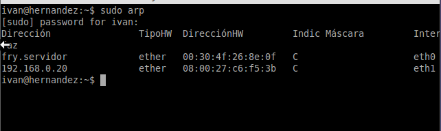